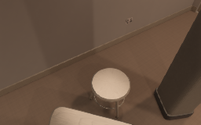
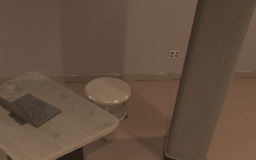
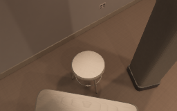
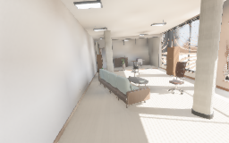
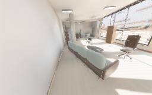
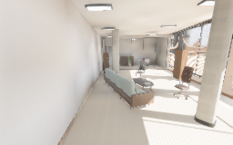

reference
Scene seed 0




Scene seed 1




Measured distributions
{
"baseline_m": {
"count": 8,
"max": 2.0941359996795654,
"mean": 1.7044201791286469,
"min": 1.3173433542251587,
"p05_p25_p50_p75_p95": [
1.3173433542251587,
1.328108787536621,
2.078092575073242,
2.078092575073242,
2.0941359996795654
]
},
"overlap": {
"count": 8,
"max": 0.8455078125,
"mean": 0.5709716796875001,
"min": 0.3165283203125,
"p05_p25_p50_p75_p95": [
0.3165283203125,
0.488623046875,
0.6193603515625,
0.6248779296875,
0.8455078125
]
},
"reprojection_p99_pixels": {
"count": 8,
"max": 0.0021949995,
"mean": 0.0020161584,
"min": 0.0018379756,
"p05_p25_p50_p75_p95": [
0.0018379756,
0.0020199318,
0.0020541074,
0.0020642271,
0.0021949995
]
},
"triangulation_degrees": {
"count": 8,
"max": 28.69729030169899,
"mean": 22.24286914761905,
"min": 14.9661896341241,
"p05_p25_p50_p75_p95": [
14.9661896341241,
19.60594370422128,
25.15701812699676,
26.161585010904535,
28.69729030169899
]
}
}